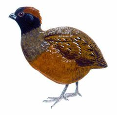
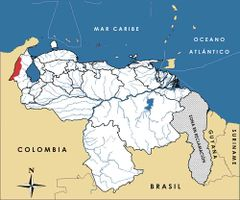

Odontophorus atrifrons
| Perdiz frentinegra | |
|---|---|
|  | |
| Riesgo de extinción | |
 Vulnerable (UICN) | |
| Clasificación científica | |
| Reino: | Animalia |
| Filo: | Chordata |
| Clase: | Aves |
| Orden: | Galliformes |
| Familia: | Odontophoridae |
| Género: | Odontophorus |
| Especie: | Odontophorus atrifrons |
| Nombre binomial | |
|
Odontophorus atrifrons Allen, 1900 | |
| Distribución | |
|
 Mapa de distribución de Odontophorus atrifrons | |
Contenido
Información de Evaluación
- Categoría y Criterio Regional: Vulnerable A2cd; B1ab(iii,v)
- Fecha de Evaluación Regional: 2015
- Evaluadores: Jesús Morales-Campos y Ariany García-Rawlins
- Categoría y Criterio Global: Vulnerable B1ab(i,ii,iii,v)
Justificación
Evaluaciones Previas
1999: Casi Amenazada (NT)
2008: Vulnerable (VU)
Información General
Nombres comunes
Perdiz frentinegra, perdiz montañera, perdiz carinegra, corcovado carinegro, Black-fronted Wood-Quail.
Notas taxonómicas
Sinónimos
Descripción
Perdiz de aspecto macizo y de tamaño mediano que mide entre 28 y 31 cm de longitud. La coloración de su cabeza es entre castaña y negra, incluyendo la parte anterior de la corona, los carrillos y la garganta. Se caracteriza por una máscara facial oscura alrededor de sus ojos con aspecto de antifaz. El plumaje del resto del cuerpo es pardo oliváceo salpicado con pequeñas manchas color arena pálido, siendo más oscuro y castaño en el dorso (Phelps Jr. y Meyer de Schauensee 1979, BirdLife International 2000, Restall et al. 2007).
Distribución
Se trata de una especie casi endémica de Colombia, cuyas poblaciones corresponden a tres subespecies. Una de ellas es Odontophorus atrifrons atrifrons, localizada en la sierra Nevada de Santa Marta; una segunda, Odontophorus atrifrons variegatus, reportada en el extremo norte de la cordillera Oriental (Santander), sin registros recientes, y una tercera, Odontophorus atrifrons navai, restringida a la sierra de Perijá, localizada principalmente en el lado de Venezuela, pero que se extiende hasta Colombia. Habita el suelo de bosques húmedos y nublados entre 1480 m (C. J. Sharpe obs. pers., febrero 2000) y 3100 m de altitud (Phelps Jr. y Meyer de Schauensee 1979, BirdLife International 2000, Renjifo et al. 2002, Hilty 2003, Restall et al. 2007, Carroll et al. 2015).
- Sistema: Terrestre
- Bioregión:
- Intervalo altitudinal (m): 1200-3100
- Endémica: No
Situación
Odontophorus atrifrons es poco común y arisca en toda su distribución (Carroll et al. 2015). En Venezuela no se cuenta con información precisa ni datos concluyentes acerca de su tamaño poblacional, pero los indicios hacen suponer que en la actualidad podría encontrarse muy amenazada. Desconocida en vida hasta el año 2000, todavía existen muy pocos registros recientes en Venezuela (C. J. Sharpe obs. pers.). El riesgo aumenta por estar asociada a bosques nublados, por su distribución restringida y por ser poco tolerante a modificaciones de su hábitat natural. Su distribución ha permanecido constante en nuestro país, mientras que en Colombia, donde está señalada como Casi Amenazada (Renjifo, L. M. et al. 2014), su situación en áreas deforestadas varía desde relativamente común a incierta, y se calcula que ha perdido cerca del 50% de su hábitat. En específico, se estima que el futuro de la especie sea dudoso en las serranías de San Lucas (Colombia) y de Perijá (Colombia y Venezuela) (Renjifo et al. 2002). A escala internacional se le clasifica como Vulnerable, considerando que está presente en una extensión menor que 20.000 km2 (BirdLife International 2015).
- EOO (km2): <20000
- AOO (km2): Temporalmente sin información
- Tendencia Poblacional: Decreciendo
Amenazas
Odontophorus atrifrons enfrenta una fuerte presión de cacería, sobre todo practicada por los pobladores locales con fines de subsistencia. La mayor parte de su hábitat ha sido alterado y se encuentra amenazado. En Colombia se reportan como principales amenazas la deforestación de los bosques de montaña y la conversión de las tierras para uso agropecuario, cultivos ilícitos e incendios (Renjifo et al. 2002). En Venezuela no se conoce con precisión la frecuencia, intensidad e impacto de las amenazas, pero ha de advertirse que la sierra de Perijá es señalada entre los ambientes con más problemas del norte de los Andes y se calcula que ello podría tener severas consecuencias sobre las especies que habitan estos bosques. Entre los severos peligros que enfrenta el hábitat de esta ave se incluyen la colonización no controlada, la ganadería y la minería asociada a la extracción de carbón, cobre, calizas, arcillas, fosfatos y barita. También dichas actividades están siendo facilitadas por la construcción de carreteras, a ambos lados de la frontera. En Venezuela desde hace más de una década se ha dado un proceso de colonización de la sierra de Perijá por parte de campesinos colombianos, quienes subsisten de la agricultura y la cacería. Algunas áreas de la región, como el Cerro Tetari, permanecen en buen estado de conservación y con sus ecosistemas originales casi intactos. Hay casos, como Cerro Pintado, donde solo se cuenta con remanentes de bosques en las laderas de la montaña (Renjifo et al. 2002, Rodríguez, J. P. y Rojas-Suárez 2003, Rodríguez, J. P. et al. 2004b, Freile y Santander 2005, IUCN 2014).
Conservación
En Colombia su distribución abarca varias áreas protegidas, aunque se ha argumentado que estas figuras de protección no han sido del todo efectivas. En nuestro país se establece su veda indefinida en 1996 (Venezuela 1996a). El parque nacional Sierra de Perijá protege la mayor parte de la distribución de Odontophorus atrifrons en Venezuela, aunque la efectividad de esta medida no es muy alta debido a su inaccesibilidad, presencia de grupos irregulares, falta de presupuesto y de personal. La especie también ha sido reportada en la Zona Protectora San Rafael de Guasare, una figura de protección menos rígida y controlada que el parque nacional. Es necesario ampliar la información existente mediante estudios de campo que abarquen otras aves de la sierra de Perijá, una de las regiones prioritarias para la conservación de aves amenazadas del país, donde se reporta el mayor número de animales vulnerables y que está clasificada como Área de Importancia para la Conservación de las Aves (Rodríguez, J. P. et al. 2004b, Freile y Santander 2005). Con base en estas investigaciones se recomienda proponer medidas de manejo y conservación.
Autorías
Autores originales
Christopher J. Sharpe y Miguel Lentino
Colaboradores
Ilustrador
Robin Restall
Referencias
- BirdLife International (2000). Threatened Birds of the World. The official source for birds on the IUCN Red List. Lynx Edicions. Barcelona, España. 864 pp.
- BirdLife International. (2015). IUCN Red List for birds. Disponible en www.birdlife.org, consultada el 08/07/2015.
- Carroll, J. P., Kirwan, G. M. y Sharpe, C. J. (2015). Black-fronted Wood-quail (Odontophorus atrifrons). En: del Hoyo, J., Elliott, A., Sargatal, J., Christie, D. A. y de Juana, E. (Eds.). Handbook of the Birds of the World Alive. Lynx Edicions. Barcelona. (Descargado de www.hbw.com/node/53354, el 20/07/2015).
- Freile, J. F. y Santander, T. (2005). Áreas Importantes para la Conservación de las Aves en Ecuador. Páginas: 283-370. En: Boyla, K. y Estrada, A. (Eds.). Áreas importantes para la conservación de las aves en los Andes tropicales: sitios prioritarios para la conservación de biodiversidad. BirdLife Internacional. Quito, Ecuador.
- Hilty, S. L. (2003). Birds of Venezuela, second edition. Princeton University Press. Princeton, NJ, USA. 878 pp.
- IUCN (2014). The IUCN Red List of Threatened Species. Version 2014.3. Accesible en www.iucnredlist.org.
- Phelps Jr., W. H. y Meyer de Schauensee, R. (1979). Una guía de las Aves de Venezuela. Gráficas Armitano. Caracas. 484 pp.
- Renjifo, L. M., Franco-Maya, A. M., Amaya-Espinel, J. D., Kattan, G. H. y López-Lanús, B. (2002). Libro Rojo de Aves de Colombia. Instituto Alexander von Humboldt, Ministerio del Medio Ambiente. Bogotá, Colombia.
- Renjifo, L. M., Franco-Maya, A. M., Amaya-Espinel, J. D., Kattan, G. H. y López-Lanús, B. (2002). Libro Rojo de Aves de Colombia. Instituto Alexander von Humboldt, Ministerio del Medio Ambiente. Bogotá, Colombia.
- Renjifo, L. M., Gómez, M. F., Velásquez-Tibatá, J., Amaya-Villarreal, A. M., Kattan, G. H., Amaya-Espinel, J. D. y Burbano-Girón, J. (2014). Libro rojo de aves de Colombia, Volumen I: bosques húmedos de los Andes y la costa Pacífica. Editorial Pontificia Universidad Javeriana & Instituto Alexander von Humboldt. Bogotá,Colombia. 465 pp.
- Restall, R., Rodner, C. y Lentino, M. (2006). Birds of Northern South America, an Identification Guide. Volume 1: Species Accounts. Volume 2: Plates and Maps. Yale University Press. New Haven, USA and London, UK. 880 pp.
- Rodríguez, J. P. y Rojas-Suárez, F. (1999). Libro Rojo de la Fauna Venezolana, segunda edición. PROVITA, Fundación Polar. Caracas. 444 pp.
- Rodríguez, J. P. y Rojas-Suárez, F. (2003). Libro Rojo de la Fauna Venezolana (2a ed. reim.). Provita, Fundación Polar. Caracas. 472 pp.
- Rodríguez, J. P. y Rojas-Suárez, F. (Eds.) (2008). Libro Rojo de la Fauna Venezolana, tercera edición. Provita y Shell Venezuela, S. A. Caracas, Venezuela. 364 pp.
- Rodríguez, J. P., Rojas-Suárez, F. y Sharpe, C. J. (2004b). Setting priorities for the conservation of Venezuela's threatened birds. Oryx 38(4): 373-382.
- Sharpe, C. J. y Lentino, M. (2015). Perdiz frentinegra, Odontophorus atrifrons. En: J.P. Rodríguez, A. García-Rawlins y F. Rojas-Suárez (eds.) Libro Rojo de la Fauna Venezolana. Cuarta edición. Provita y Fundación Empresas Polar, Caracas, Venezuela. Recuperado de: animalesamenazados.provita.org.ve/content/perdiz-frentinegra Mié, 04/04/2018 - 13:07
- Venezuela. (1996a). Decreto 1485: Animales Vedados para la Caza. Gaceta Oficial No. 36.059 - 7 de octubre de 1996. Caracas.